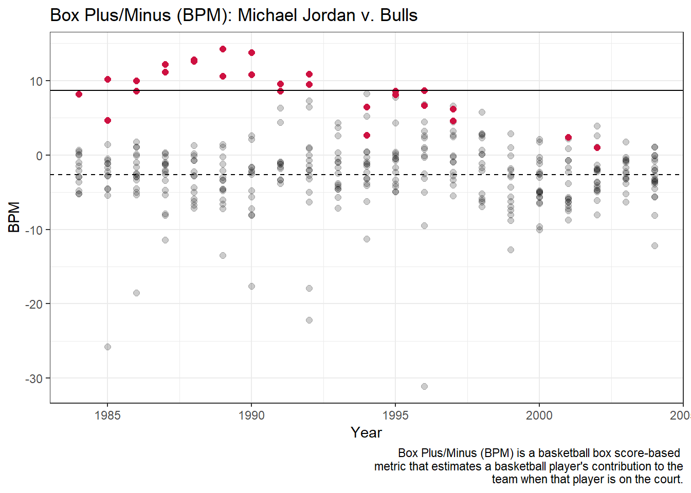
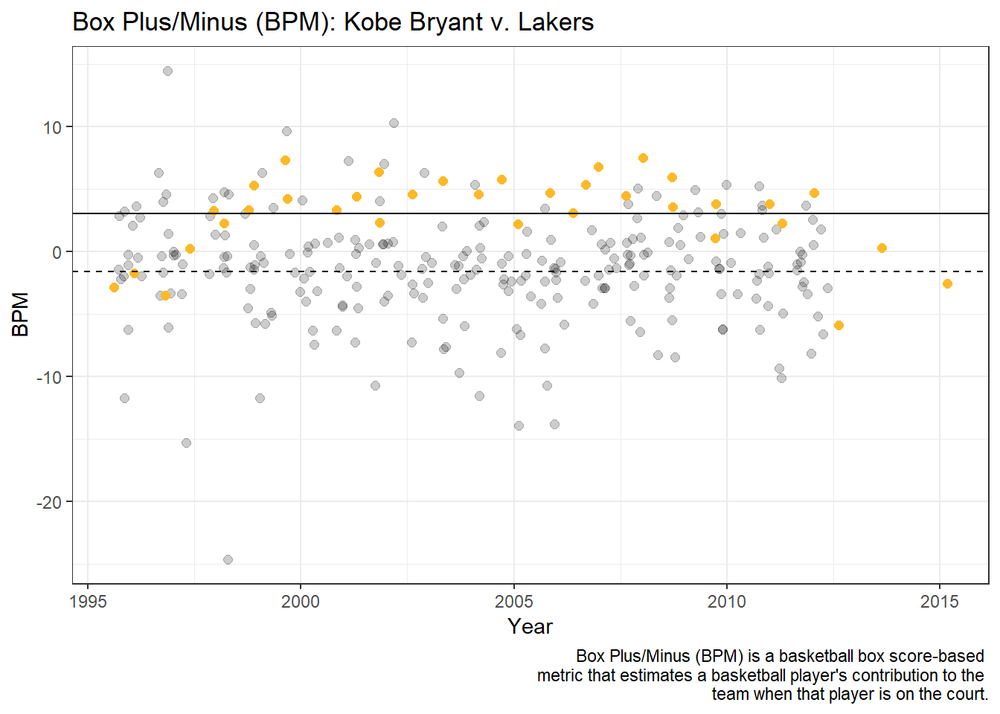
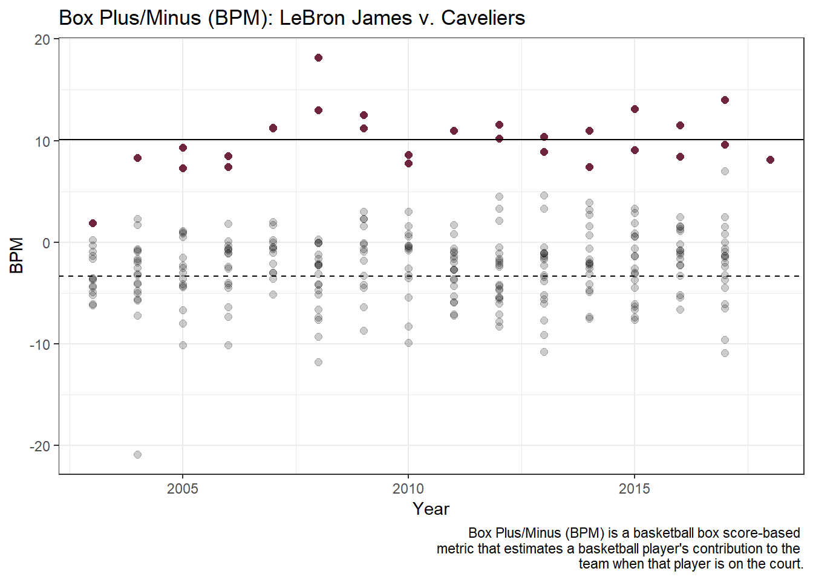
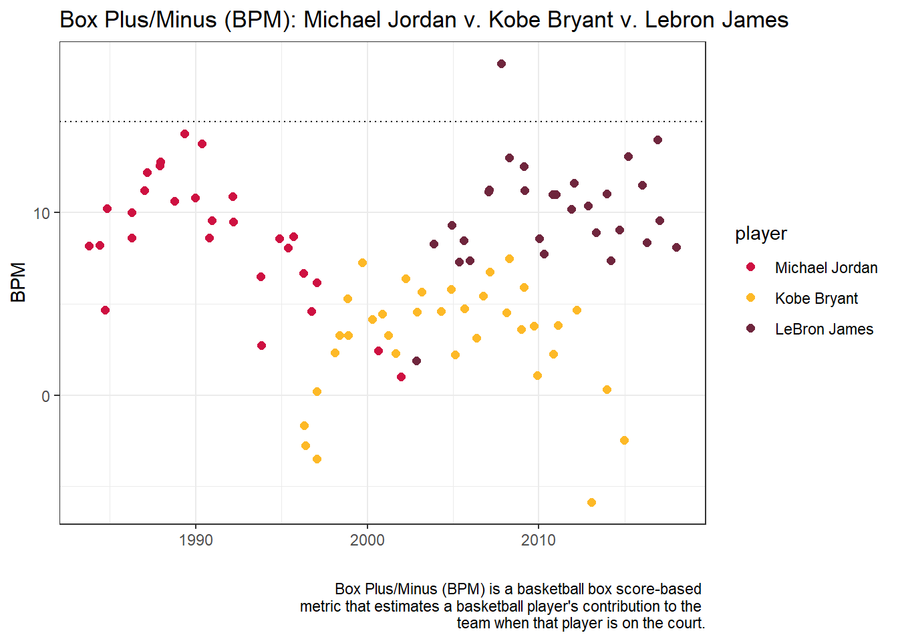

For decades armchair athletes have been debating, who is the the greatest basketball player of all time: LeBron James, Kobe Bryant or Michael Jordan.
But who really is the GOAT? Based on our analysis it is clear who the best player of all times is and we can finally put these debates to rest.
The Data
We based our findings off of various datasets from Kaggle.com.
NBA Players stats from 1950-2017
Michael Jordan, Kobe Bryant and LeBron James stats through 2019
Back to Basics
First we looked at some basic aggregates to see if a top player emerged.
Michael Jordan
15 seasons
1072 games
6 NBA championships
5x NBA MVP
14x NBA All-Star
32,292 career points
30.1 PPG
Kobe Bryant
20 seasons
1,346 games
5 NBA championships
1x NBA MVP
18x NBA All-Star
33,643 career points
25 PPG
LeBron James
20 seasons & counting
1,378 games
4 NBA championships
4x NBA MVP
18x NBA All-Star
37,371 career points
27.1 PPG
What does this mean? Still no clear winner based on these initial statistics.
Let’s Get Advanced
We turned to various advanced statistics for more clarity and chose to look at each players Box Plus-Minus(BPM) throughout their careers.
BPM is a metric that:
is derived from a player’s own statistics (points, rebounds, and assists, etc.), along with their position, and overall team performance
estimates a player’s contribution to the team when that player is on the court in points above the NBA average, which is 0
Example: a BPM of +5 means that per game, the team is 5 points better with the player on the court than with the average NBA player
BPM: Individual Player vs. Team
How do they stack up against their teammates each season?
Here is the code
#define custom colorsbullsred ="#CE1141"lakeryellow ="#FDB927"cavswine ="#6f263d"#filter dataset for specific playersjustmj<-filter(goat, player =="Michael Jordan")justkb<-filter(goat, player =="Kobe Bryant")justlj<-filter(goat, player =="Lebron James")#find PER average for teams and playersbullavg<-filter(fullnba, Player !="Michael Jordan", Tm =="CHI", between(Year, 1984, 2003)) %>%summarise(mean =mean(BPM, na.rm=TRUE))mjavg<-filter(goat, player =="Michael Jordan") %>%summarise(mean =mean(overallbpm, na.rm=TRUE))lakeravg<-filter(fullnba, Player !="Kobe Bryant", Tm =="LAL", between(Year, 1996, 2012)) %>%summarise(mean =mean(BPM, na.rm=TRUE))kbavg<-filter(goat, player =="Kobe Bryant") %>%summarise(mean =mean(overallbpm, na.rm=TRUE))cavavg<-filter(fullnba, Player !="LeBron James", Tm =="CLE", between(Year, 2003, 2017)) %>%summarise(mean =mean(BPM, na.rm=TRUE))ljavg<-filter(goat, player =="Lebron James") %>%summarise(mean =mean(overallbpm, na.rm=TRUE))#need to calculate league averages for correct years and add those lines back in#need to adjust y axis ranges so they are the same across all three#plots#Michael Jordanmj<-fullnba %>%filter(Player !="Michael Jordan", Tm =="CHI", between(Year, 1983, 2004)) %>%ggplot(aes(x=Year, y=BPM, fill="black"))+geom_point(alpha=.2, size=2)+geom_point(data=justmj, aes(x=year, y=overallbpm, color=bullsred), size=2)+scale_colour_manual(values = bullsred)+#plot league average of ?#geom_hline(yintercept = 15, linetype="dotted")+#plot team average of -2.65geom_hline(yintercept =-2.65, linetype="dashed")+#plot player average of 11.6geom_hline(yintercept =8.65, linetype="solid")+theme_bw()+theme(legend.position="none" )+labs(title="Box Plus/Minus (BPM): Michael Jordan v. Bulls",caption="Box Plus/Minus (BPM) is a basketball box score-based metric that estimates a basketball player's contribution to the team when that player is on the court." )#Kobe Bryantkb<-fullnba %>%filter(PER >0, Player !="Kobe Bryant", Tm =="LAL", between(Year, 1996, 2012)) %>%ggplot(aes(x=Year, y=BPM, fill="black"))+geom_jitter(alpha=.2, size=2)+geom_jitter(data=justkb, aes(x=year, y=overallbpm, color=lakeryellow), size=2)+scale_colour_manual(values = lakeryellow)+#plot league average of ?#geom_hline(yintercept = 15, linetype="dotted")+#plot team average of -1.58geom_hline(yintercept =-1.58, linetype="dashed")+#plot player average of 3.04geom_hline(yintercept =3.04, linetype="solid")+theme_bw()+theme(legend.position="none" )+labs(title="Box Plus/Minus (BPM): Kobe Bryant v. Lakers",caption="Box Plus/Minus (BPM) is a basketball box score-based metric that estimates a basketball player's contribution to the team when that player is on the court." )#LeBron Jameslj<-fullnba %>%filter(PER >0, Player !="LeBron James", Tm =="CLE", between(Year, 2003, 2017)) %>%ggplot(aes(x=Year, y=BPM, fill="black"))+geom_point(alpha=.2, size=2)+geom_point(data=justlj, aes(x=year, y=overallbpm, color=cavswine), size=2)+scale_colour_manual(values = cavswine)+#plot league average of ?#geom_hline(yintercept = 15, linetype="dotted")+#plot team average of -3.32geom_hline(yintercept =-3.32, linetype="dashed")+#plot player average of 10.1geom_hline(yintercept =10.1, linetype="solid")+theme_bw()+theme(legend.position="none" )+labs(title="Box Plus/Minus (BPM): LeBron James v. Caveliers",caption="Box Plus/Minus (BPM) is a basketball box score-based metric that estimates a basketball player's contribution to the team when that player is on the court.")
Here is the code
#Show plotsplot(mj)

Here is the code
plot(kb)

Here is the code
plot(lj)

BPM: Individual Player
Here is the code
team_colors <-c("#CE1141", "#FDB927", "#6f263d")allgroup<-goat %>%ggplot(aes(x=year, y=overallbpm, color=player))+geom_jitter(size=2)+scale_colour_manual(values = team_colors,breaks=c('Michael Jordan', 'Kobe Bryant', 'Lebron James'),labels=c('Michael Jordan', 'Kobe Bryant', 'LeBron James'))+theme_bw()+geom_hline(yintercept =15, linetype="dotted")+labs(title="Box Plus/Minus (BPM): Michael Jordan v. Kobe Bryant v. Lebron James",caption="Box Plus/Minus (BPM) is a basketball box score-based metric that estimates a basketball player's contribution to the team when that player is on the court.",y="BPM",x="" )
Here is the code
plot(allgroup)

Here is the code
regmj <-filter(goat, player =="Michael Jordan" , gametype =="Regular Season")mj_regnum <- tibble::rowid_to_column(regmj,"num_year")playmj<-filter(goat, player =="Michael Jordan" , gametype =="Playoffs")mj_playnum <- tibble::rowid_to_column(playmj,"num_year")regkb<-filter(goat, player =="Kobe Bryant" , gametype =="Regular Season")kb_regnum <- tibble::rowid_to_column(regkb,"num_year")playkb <-filter(goat, player =="Kobe Bryant" , gametype =="Playoffs")kb_playnum <- tibble::rowid_to_column(playkb,"num_year")reglj<-filter(goat, player =="Lebron James", gametype =="Regular Season")lj_regnum <- tibble::rowid_to_column(reglj,"num_year")playlj<-filter(goat, player =="Lebron James", gametype =="Playoffs")lj_playnum <- tibble::rowid_to_column(playlj,"num_year")index_goat <-rbind(mj_regnum, mj_playnum,kb_regnum,kb_playnum,lj_regnum,lj_playnum)